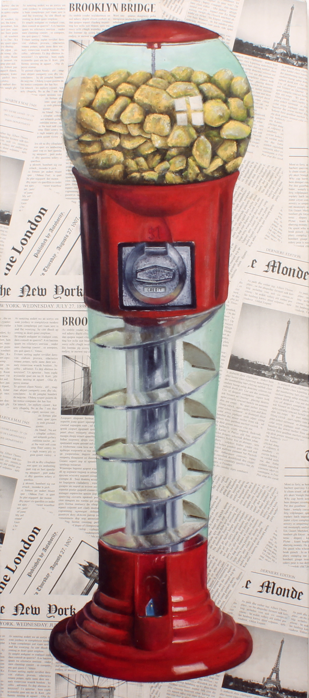
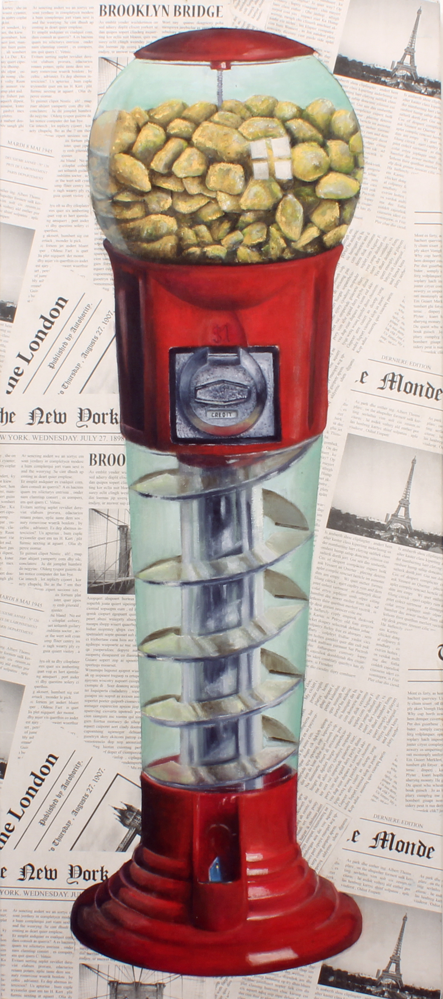

Trampas
2017-2018
“Por rampas lentas y silenciosas nos dejan caminar, la inercia se vuelve costumbre y sin tomar cuenta el tiempo escribe la verdad”.
La comprensión de los conceptos que contiene una forma se vuelve una lengua enlazando múltiples lógicas/figuras, formando así un relato visual. La forma en que las imágenes se vuelven una idea, como escondidas en una caja que deja ver de su significado sólo la superficie.
El lenguaje simbólico del imaginario colectivo nutre la construcción del relato de estas obras en forma de crítica hacia la misma estructura social que les da significado.
Esta serie fue expuesta en el espacio cultural “Cerámicas del Patio”en el mes de agosto del 2018.
 
